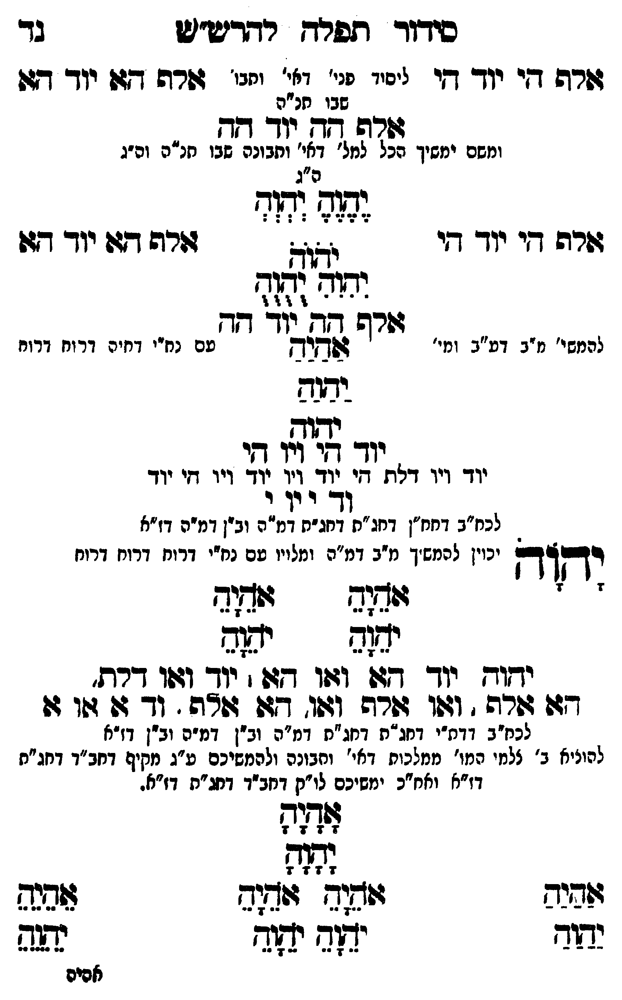

Neue Klartextfassung
=== טבלה === [טור ימין] אלף הי יוד הי [טור אמצעי] [ליסוד פני' דאי' ותבו' שבו חו"ח] [טור שמאל] אלף הא יוד הא === סוף טבלה === אלף הה יוד הה [ומשם ימשך הכל למל' דאי' ותבונה שבו חו"ח וה"ג] === טבלה === [טור ימין] אלף הי יוד הי [טור אמצעי] [ה"ג] יֶהֶוֶהֶ יְהְוְהְ יֹהֹוֹהֹ יִהִוִהִ יֻהֻוֻהֻ [טור שמאל] אלף הא יוד הא === סוף טבלה === אלף הה יוד הה [להמשיך מ"ב דע"ב ומי' עם נח"י דחיה דרוח:] אַהַיַהַ יַהַוַהַ יהוה יוד הי ויו הי יוד ויו דלת הי יוד ויו יוד ויו הי יוד וד י וי י [לכח"ב דחח"ן דחג"ת דחג"ת דמ"ה וב"ן דמ"ה דז"א] יְהוָה [יכוין להמשיך מ"ב דמ"ה ומלויו עם נח"י דרוח דרוח דרוח] === טבלה === [טור ימין] אָהָיָהָ יָהָוָהָ [טור אמצעי] [טור שמאל] אָהָיָהָ יָהָוָהָ === סוף טבלה === יהוה יוד הא ואו הא יוד ואו דלת, הא אלף, ואו אלף ואו, הא אלף וד א או א [לכח"ב דדת"י דחג"ת דחג"ת דמ"ה וב"ן דמ"ה וב"ן דז"א] [להעלות ב' צלמי המו' ממלכות דאי' ותבונה ולהמשיכם ע"ג מקיף דחב"ד דחג"ת דז"א וחו"ב ימשיכם לו"ק דחב"ד דחג"ת דז"א.] === טבלה === [טור ימין] אַהַיַהַ יַהַוַהַ [טור אמצעי] אָהָיָהָ יָהָוָהָ אֹהֵיָהֵ אֹהֵיָהֵ יֹהֵוָהֵ יֹהֵוָהֵ [טור שמאל] אֵהֵיֵהֵ יֵהֵוֵהֵ === סוף טבלה ===
Original gegen neue OCR · Niqqud für Vergleich ausgeblendet
Original
=== טבלה === [טור ימין] אלף היK112-001 יוד הי [טור אמצעי] [ליסוד פני' דאי' ותבו'K112-002 שבו חו"ח] [טור שמאל] אלף הא יוד הא === סוף טבלה === אלף הה יוד הה [ומשם ימשךK112-003 הכל למל' דאי' ותבונה שבו חו"ח וה"ג] === טבלה === [טור ימין] אלף היK112-004 יוד הי [טור אמצעי] [ה"ג] יהוה יהוה יהוה יהוה יהוה [טור שמאל] אלף הא יוד הא === סוף טבלה === אלף הה יוד הה [להמשיךK112-005 מ"ב דע"ב ומי' ∅K112-006 עם נח"י דחיה דרוח:] אהיה יהוה יהוה יוד הי ויו היK112-007 יוד ויו דלת היK112-008 יוד ויו יוד ויו הי יוד ודK112-009 י וי י [לכח"בK112-010 דחח"ן דחג"ת דחג"תK112-011 דמ"ה וב"ןK112-012 דמ"ה דז"א] יהוה [יכויןK112-013 להמשיך מ"ב דמ"ה ומלויו עם נח"יK112-014 דרוח דרוח דרוח] === טבלה === [טור ימין] אהיה יהוה [טור אמצעי] [טור שמאל] אהיה יהוה === סוף טבלה === יהוהK112-015 יוד הא ואו הא יוד ואו דלת, הא אלף, ואו אלף ואו, הא אלף וד א או א [לכח"בK112-016 דדת"י דחג"ת דחג"תK112-017 דמ"ה וב"ן דמ"ה וב"ן דז"א] [להעלותK112-018 ב' צלמי המו' ממלכותK112-019 דאי' ותבונהK112-020 ולהמשיכם ע"ג מקיף דחב"ד דחג"תK112-021 דז"א וחו"בK112-022 ימשיכם לו"ק דחב"ד דחג"ת דז"א.] === טבלה === [טור ימין] אהיה יהוה [טור אמצעי] אהיה יהוה אהיה אהיה יהוה יהוה [טור שמאל] אהיה יהוה === סוף טבלה ===K112-023
OCR · fehlbar
סידור תפרח רדדשוש בד זרה דיK112-001 יוד די יניי צנ 4[- ייני' גזרה דזו יוד דגK112-002 שבו חנ"ה זרה גד (יוך חח ומשם ימשיךK112-003 הכל למל' דאי' ותבונה שבו חנ"ה וכ"ג ה"ג לזזז) [ז[זז ר ר 22 י שרה דיK112-004 יוד ד ([ גזרה ד( יוך דג מצ זל[- דורש (2244ו- חד להמשי'K112-005 מ"ב דע"ב ומי' 51239K112-006 עם נח"י דחיה דרוח דרוח ידנה עגוש יוך יונו דזיK112-007 יוד ויו דלח די. מד גן גוד ויו חזיK112-008 יוד וד' ו ווK112-009 י לכח"בK112-010 דחח"ן דחג"ח' דחגרחK112-011 דמ"ה וביןK112-012 דמ"ה דז"א רךקץךץ יכויןK112-013 להמשיך מ"ב דמ"ה ומלויו עם נחייK112-014 דרוח דרוח דרוח יש(ב יה(ב ישווג יוך זו 961ו 277 זK112-015 יוד ודו דרת. דו ברה ' וז(ו ופרה וזוו. דז: 544ה - ו- 4 גוו ו לכז"בK112-016 דדת"י דחג"ת דחג"חK112-017 דמ"ה וב"ן דמ"ה וב"ן דז"א להוניאK112-018 ב' צלמי המו' ממלכוחK112-019 דאי' וחבונהK112-020 ולהמשיכם ע"ג מקיף דחב"ד דחג"חK112-021 דז"א ואח"כK112-022 ימשיכם לו"ק דחב"ד דחג"ת דז"א. [) זביד שלללל זזבנש נדד אף ידוד נגש אפיםK112-023